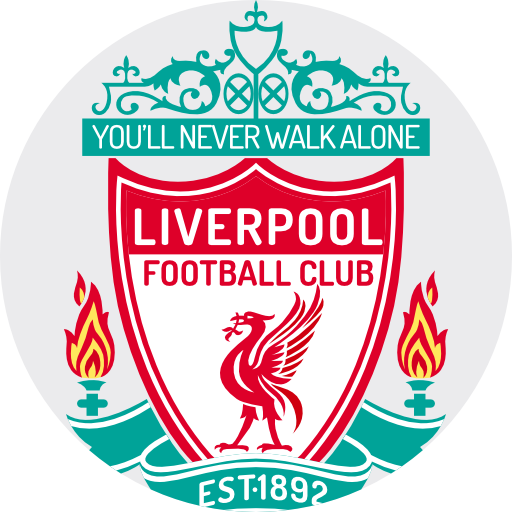
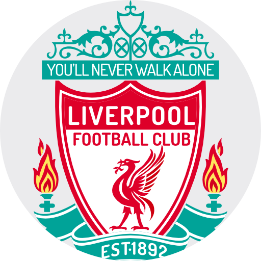

LIVERPOOL FC.
(6 CHAMPIONS)
"NUNCA CAMINARAS SOLO"
El Liverpool Football Club es un equipo de fútbol inglés con una rica historia en la UEFA Champions League. Han sido campeones en varias ocasiones, siendo su último título en la temporada 2018-2019. Bajo la dirección del entrenador Jürgen Klopp, el Liverpool ha mostrado un juego emocionante y ofensivo en la competición europea. Con jugadores destacados como Mohamed Salah, Sadio Mané y Virgil van Dijk, el equipo ha logrado llegar lejos en el torneo en temporadas recientes, compitiendo a un alto nivel contra los mejores equipos de Europa.
 
